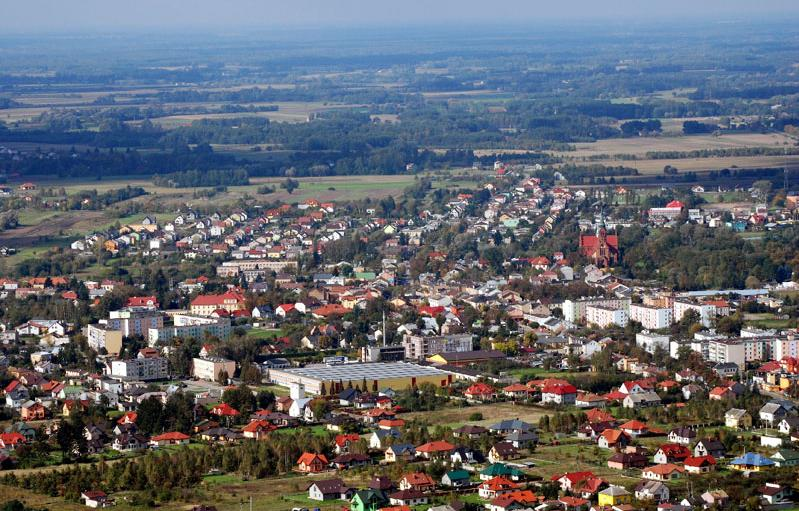
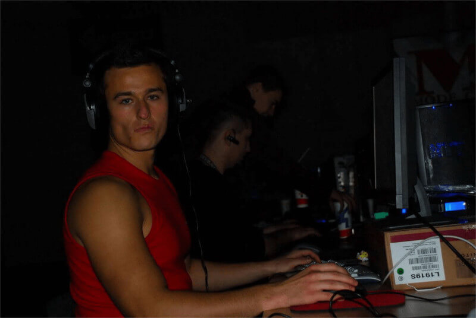
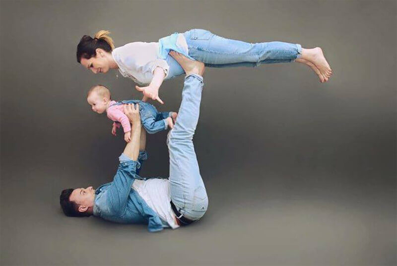

Jarosław „PashaBiceps” Jarząbkowski was born in small town in Mazowieckie District called Nasielsk on 11 April 1988. When he was young, he didn't have much to do in such a small village, so when the internet and first internet cafes appeared, he started playing Counter Strike 1.6 with his friends. That's how his passion for CS was born.
After just few weeks Pasha was getting better and better. He realised his skills are good enough to enter small amateur tournaments. At the age of only 16 Jarek joined a professional Counter Strike team. Over time his skills grew, and there was a decision to make. He risked his life career because he had to ensure the well-being of his loved ones and devoted himself fully to his passion. In the end, it turned out to be a good choice and brought him big profits.
Jarosław met his first love in 1st grade of middle school and quickly fell in love with her. At the age of 19 they left for Warsaw, but life in big city was not easy. At this point in time Pasha didn’t earn much money and he felt wrong about his wife having to work to feed them. He started studying physiotherapy but his love to CS had still had special place in his heart. In 2014, he became a father and three years later his second daughter was born.
